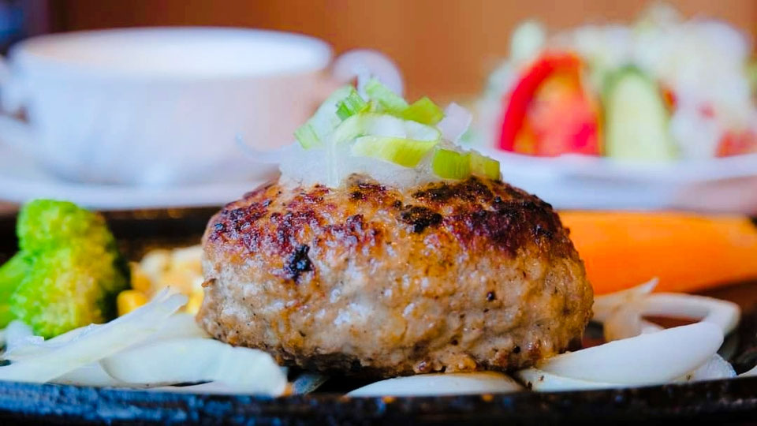
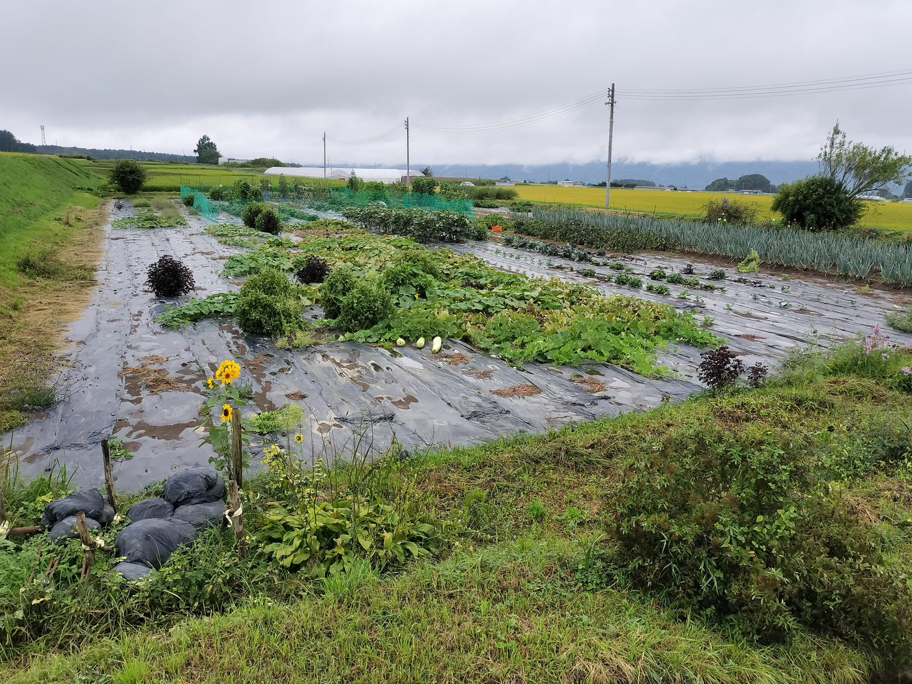
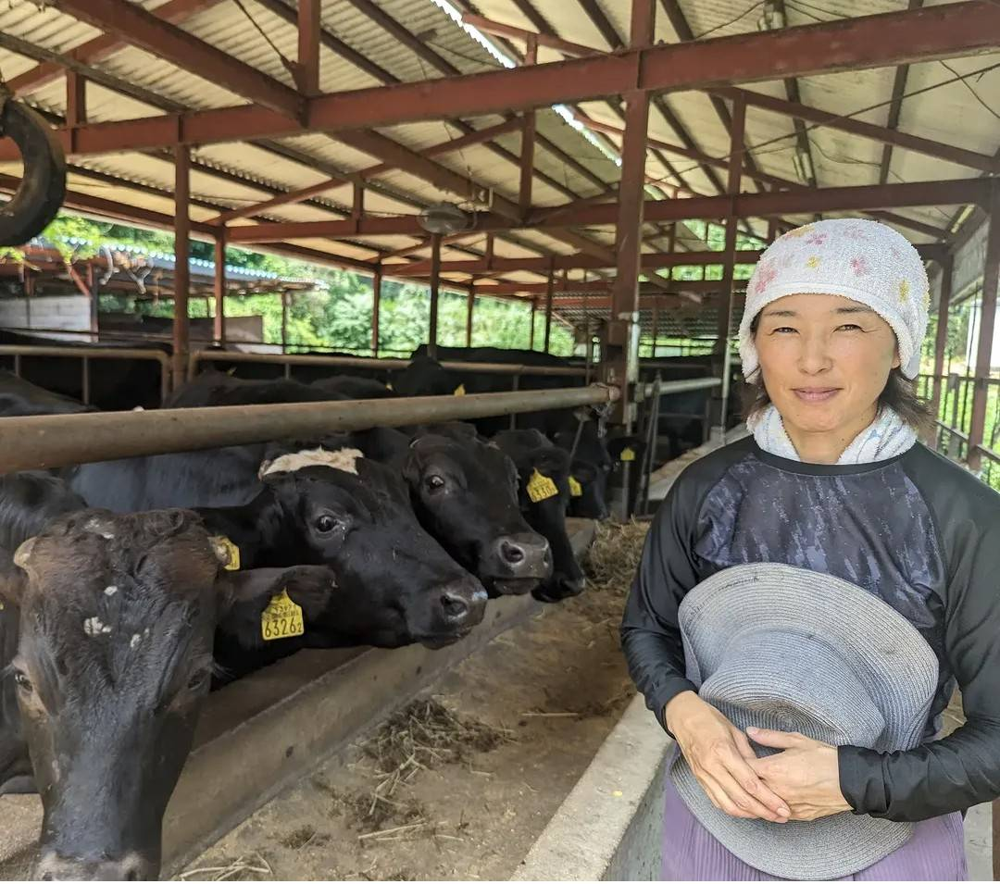
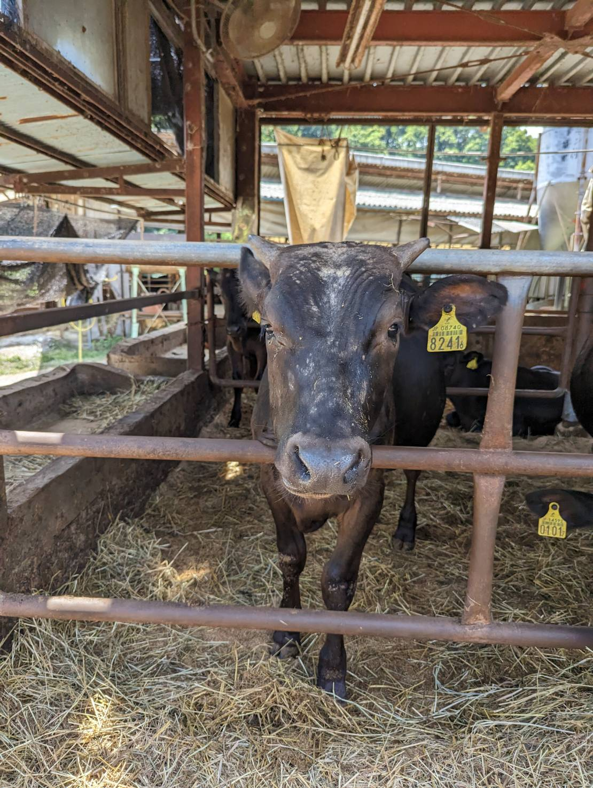
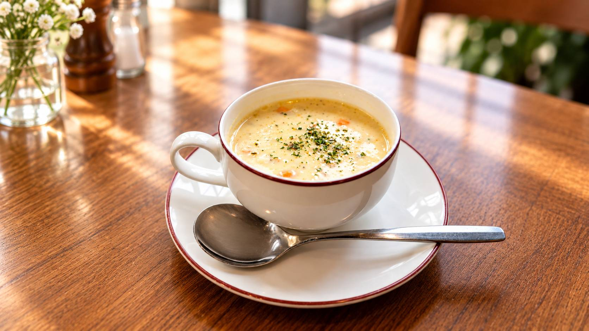
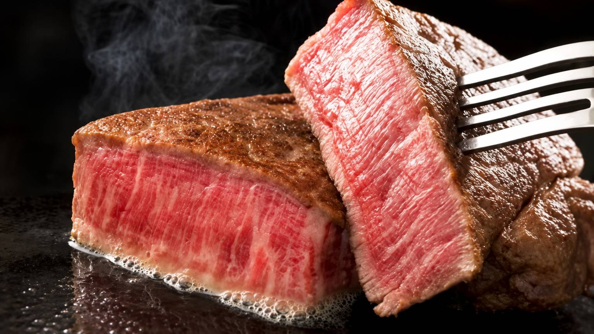

OUR COMMITMENT
COMMITMENT
信州の恵みを、一皿に。
WOODMAN plus
信州が育んだ味わい
名物・元祖信州ハンバーグ
信州の自然と生産者に寄り添い、
三代にわたり地元の恵みを大切にしてきた
お肉料理専門店WOODMAN plus。
創業60数年の歴史と味、
食材へのこだわりが評価され、
長野県の「信州の美味しいふーどショップ」に
認定されています。
名物の元祖信州ハンバーグをはじめ、
蓼科牛サーロインや
希少な信州和牛シャトーブリアンなど、
ここでしか味わえない一皿をご用意しています。
信州野菜を使用したサラダ、
信州牛乳と黄金コーンで作る手作りコーンスープ、
茅野産ミルキークイーンのお米など、
一皿一皿に信州の恵みを取り入れています。
八ヶ岳・蓼科・諏訪観光の途中にも立ち寄りやすいこの場所で、
旅の思い出に残る信州ならではの味わいを
お楽しみください。

OUR HAMBURG
元祖信州ハンバーグ
WOODMAN plusを代表する、 当店イチオシの信州ハンバーグ。
信州の美味しい空気と水、 豊かな大地のエネルギーをたくさん受けて育った 牛肉や豚肉を使用しています。
生まれたての卵、 八ヶ岳山麓の契約農家から届く玉ねぎ、 しぼりたての信州牛乳など、 信州にこだわった食材を使用しています。
それぞれの素材の美味しさを生かしながら、 一つひとつ丁寧に手作りしています。
MENUを見る →LOCAL INGREDIENTS
信州の食材
牛肉や豚肉、卵、玉ねぎ、牛乳など、 WOODMAN plusでは 長野県産の食材を中心に使用しています。
信州の豊かな自然の中で育まれた食材を、 料理を通してお楽しみいただけるよう、 素材一つひとつを大切にしています。
食材が持つ本来の美味しさを生かしながら、 信州ならではの味わいを 一皿としてお届けしています。

FARMERS
八ヶ岳山麓・蓼科高原の野菜
八ヶ岳山麓や蓼科高原の契約農家から、 新鮮な高原野菜が届けられます。
さんさんと降り注ぐ太陽と、 澄みきった空気の中で育った 季節ごとの野菜を、 料理に取り入れています。
ビタミンたっぷりのサラダには、 オリジナルのごまドレッシングをご用意。 お好みでごまをその場で挽いて、 香りとともにお楽しみいただけます。

PRODUCER
命を育てる人
私たちが料理としてお届けしている 牛肉や豚肉も、 生産者の方々が日々大切に育てています。
毎日の世話をし、 牛たちが過ごす環境を整え、 一頭一頭と向き合う。
その仕事があるからこそ、 私たちは料理として お客様にお届けすることができます。
生産者の方々への感謝を忘れず、 大切な食材を一皿に仕上げています。

LIFE
一頭一頭と向き合う
私たちがいただく命の背景には、 その命を大切に育ててきた 生産者の方々の時間があります。
牛たちが過ごす場所を見て、 育てている人の姿を知る。
そうしたつながりを感じながら、 一皿の料理をお届けしています。

SHINSHU MILK
信州牛乳と黄金コーン
広大な牧場で育った牛から生まれる 信州牛乳を使用しています。
「コーンだらけのコーンスープ」は、 信州牛乳と黄金コーンを使用した 手作りの一品です。
牛乳本来の甘さを生かしながら、 濃厚で豊かな味わいに仕上げています。
LOCAL RICE
茅野の大地で育ったお米
お米にもこだわり、 地元・茅野で育った ミルキークイーンを使用しています。
契約農家が丹精込めて育てたお米は、 肉料理との相性も大切にしながら、 一皿の美味しさを支えています。
TATESHINA BEEF
蓼科牛
長野県のブランド牛の一種である「蓼科牛」は、 きめ細やかな肉質とやわらかな口当たりが特徴です。
その上品な味わいには特定のファンも多く、 平成7年（1995年）に商標登録されてから 伊勢神宮にも奉納された経歴を持ちます。
JA佐久浅間が長い経験と技術を生かして肥育生産した肉用牛であり、 メイン品種は黒毛和牛とホルスタインを掛け合わせた交雑牛。 年間出荷頭数は全国のブランド牛の中でも少なく、 希少な牛肉ともいわれています。
蓼科牛について詳しく見る →
SIRLOIN
蓼科牛を
サーロインで
WOODMAN plusでは、 蓼科牛をサーロインにて ご提供しています。
サーロインは、 きめ細かな肉質とほどよい脂の 旨味を楽しめる部位です。
肉そのものの美味しさを しっかりと味わっていただけるよう、 一皿一皿丁寧にご用意しています。
OUR STEAK
肉料理専門店のステーキ
WOODMAN plusでは、 元祖信州ハンバーグだけでなく、 ステーキにもこだわっています。
蓼科牛サーロインや 希少な信州和牛シャトーブリアンなど、 肉の質や味を大切にした 特別な一皿をご用意しています。
柔らかさだけではなく、 肉そのものの美味しさと、 お気軽に楽しんでいただけることを 大切にしています。
MENUを見る →
YATSUGATAKE
八ヶ岳の恵み
八ヶ岳の豊かな自然に囲まれた 茅野の地。
澄んだ空気と水、 そして豊かな大地が育む食材を通して、 信州の魅力を感じていただける お店を目指しています。
SEASONAL FOOD
信州ならではの味
季節によって、 信州ならではの食材を お楽しみいただけることもあります。
冬には、信州の伝統野菜である 野沢菜をご用意することもあります。
WOODMAN plusで大切に受け継がれている 自家製野沢菜漬けは、 日に日に増していく味わいも 信州ならではの魅力の一つです。
OUR STORY
WOODMAN plusの想い
信州・茅野の地で、 食事を通して皆さまに 楽しい時間を過ごしていただくこと。
信州の自然と生産者、 そして地域の食材と向き合いながら、 これからもWOODMAN plusならではの味を お届けしていきます。